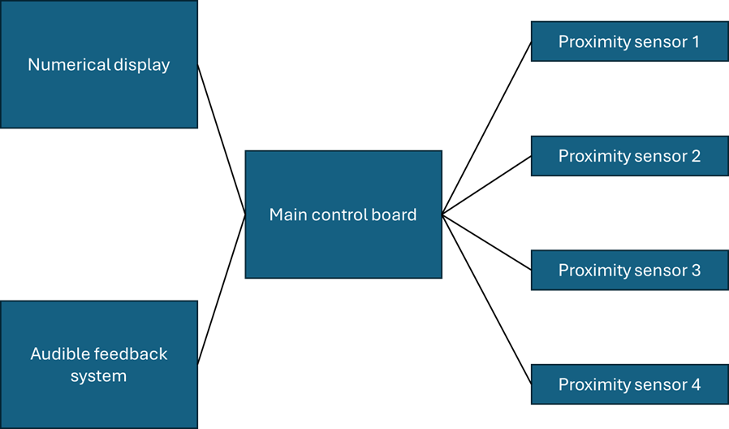
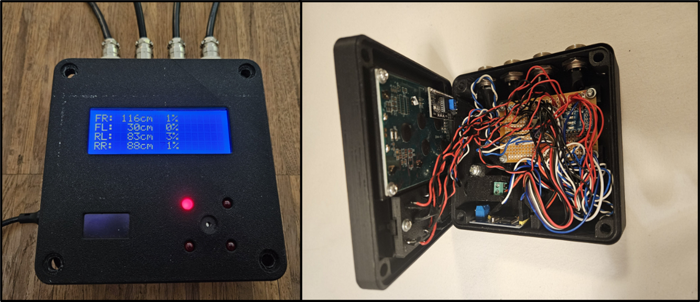
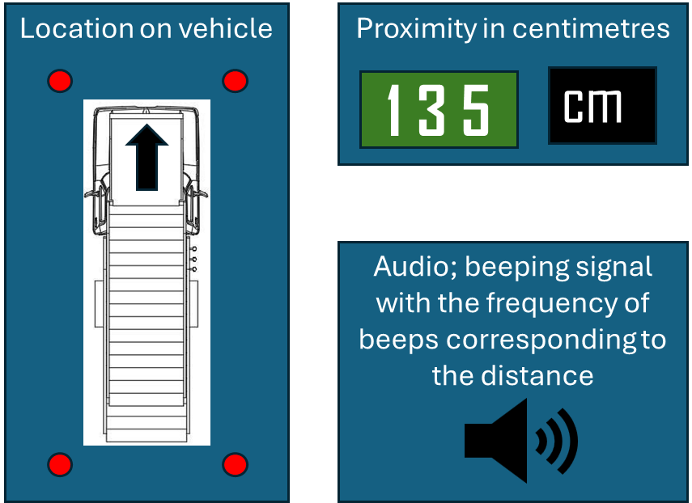
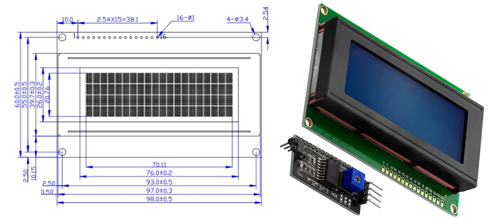
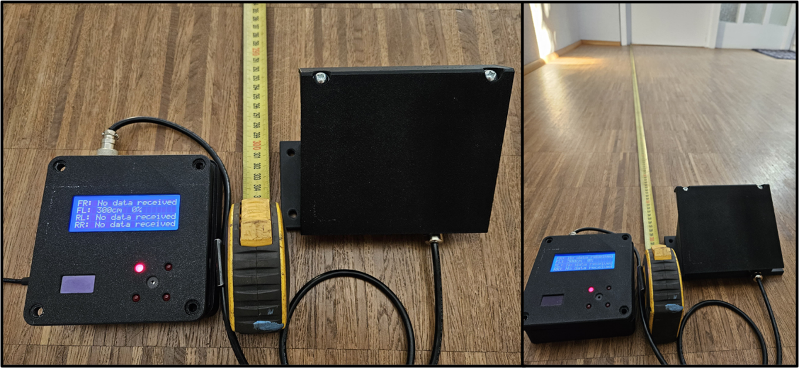
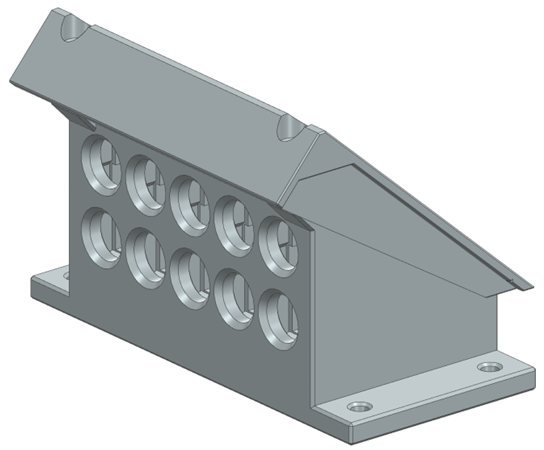
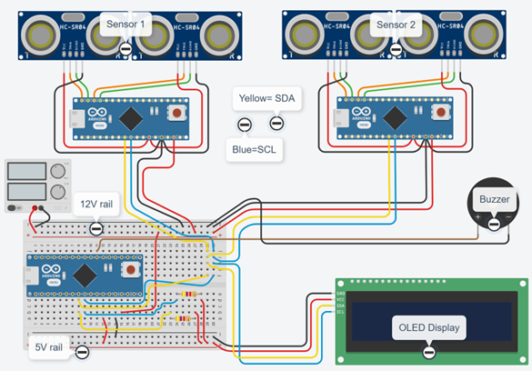
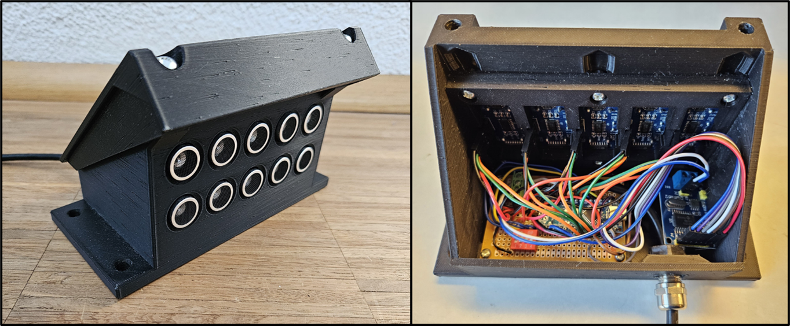

What the MVP Does
The MVP assists ground-vehicle operators during low-speed docking by continuously measuring distances, identifying the closest hazard, and giving escalating audio/visual cues so the driver can stop or correct in time. It’s retrofit-friendly, modular, and designed for quick installation on existing fleets. :contentReference[oaicite:0]{index=0}


Operator Experience
- Clear priority: the system highlights the nearest side/corner so correction is obvious. :contentReference[oaicite:3]{index=3}
- Escalating alerts: faster beep + stronger visual as distance closes; screen gives detail when needed. :contentReference[oaicite:4]{index=4}
- Minimal training: users understand the cues quickly in tests and dry-runs. :contentReference[oaicite:5]{index=5}


Validation Summary
Range & Accuracy
The MVP reliably detects hazards across a ~0.25–3.0 m operating band suitable for docking speeds. A three-meter setup test confirmed accurate readings at range and when closing. :contentReference[oaicite:8]{index=8}

Responsiveness
End-to-end response felt immediate in practice. Step-by-step timing analysis yields ~50 ms typical and <90 ms worst-case from measurement to display—well below the ~200 ms human perception threshold.
Robustness & Fault Handling
Each sensor module fuses five sonar readings with majority logic and trend checks, suppressing spikes and outliers. Health states (old/unresponsive) and per-sensor error are surfaced to the operator, so trust in a reading is visible at a glance. :contentReference[oaicite:11]{index=11}
Environmental Durability (Prototype Level)
Housings include passive weather protection (overhang roof, slanted cover, seal grooves) and achieved practical splash resistance in handling and tests. The report documents the protection features and a roof detail that shields sensors from rain/snow; future work targets higher IP rating and heaters/wipers.


How We Got to the MVP
We moved from a proof-of-concept to a robust MVP through iterative prototyping and decisions on sensing, UI, modularity, and comms—always driven by validation results and simplicity for retrofit. :contentReference[oaicite:15]{index=15}


- From 2 → 5 sensors: majority voting improved reliability and reduced false spikes. :contentReference[oaicite:18]{index=18}
- Operator UI: LEDs/beeper for reflex cues; LCD for detail when needed. :contentReference[oaicite:19]{index=19}
- Modularity: connectorized modules; on-boot identity via DIP switch for install flexibility. :contentReference[oaicite:20]{index=20}
- Comms: network design and arbitration support fast updates and priority to the closest hazard. :contentReference[oaicite:21]{index=21}
Recommendations & Next Steps
- Field trials: test on actual ground vehicles to refine UI thresholds, loudness, and mounting; log edge cases. :contentReference[oaicite:22]{index=22}
- Environmental hardening: move to injection-moulded enclosures, conformal coating/potting; target higher IP rating and thermal margins. :contentReference[oaicite:23]{index=23}
- Network & integration: evaluate CAN-centric backbone for EMI resilience and standardize interfaces to vehicle systems. :contentReference[oaicite:24]{index=24}
- Certification pathway: plan CE/EASA-relevant steps (EMI, electrical safety, mechanical robustness). :contentReference[oaicite:25]{index=25}
- Scalability: custom PCBs, streamlined harness, and modular firmware updates for production. :contentReference[oaicite:26]{index=26}